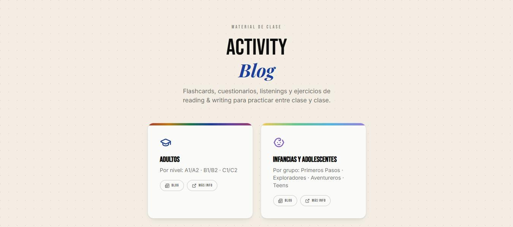

full-stack — product design & build
Activity Blog
Activity platform for online English classes. Admin panel to create and control sessions and track student progress, with authenticated access. React front end on Vercel, Supabase for auth and database.
architecture
React on Vercel for the front end; Supabase handles auth and the database. The admin panel sits behind authenticated access, so class data is never exposed to the student side.